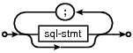
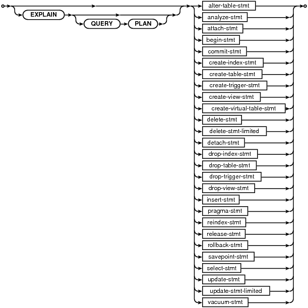

Small. Fast. Reliable.
Choose any three.
Choose any three.
|
|
SQL As Understood By SQLite
SQLite understands most of the standard SQL language. But it does omit some features while at the same time adding a few features of its own. This document attempts to describe precisely what parts of the SQL language SQLite does and does not support. A list of SQL keywords is also provided. The SQL language syntax is described by syntax diagrams.
The following syntax documentation topics are available:
The routines sqlite3_prepare_v2(), sqlite3_prepare(), sqlite3_prepare16(), sqlite3_exec(), and sqlite3_get_table() accept an SQL statement list (sql-stmt-list) which is a semicolon-separated list of statements.
sql-stmt-list:

Each SQL statement in the statement list is an instance of the following:
sql-stmt:
